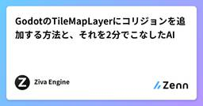
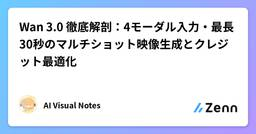
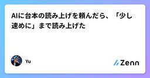
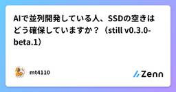
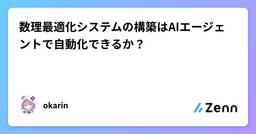
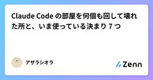

Zennの「AI」のフィード
フィード

GodotのTileMapLayerにコリジョンを追加する方法と、それを2分でこなしたAI
Zennの「AI」のフィード
この記事は、GodotのTileMapLayerのガイド https://ziva.sh/blogs/godot-tilemap のうち、コリジョンの節の日本語版です（英語の原文はZiva.shが2026年11月10日に更新）。以下で使うサンプルプロジェクトは、このガイドからダウンロードできます。 TileMapLayerにコリジョンを追加するTileMapLayerは、TileSetに物理レイヤーがあり、固いタイルにコリジョンポリゴンがあるまではコリジョンを持ちません。公式のTileSetチュートリアルにある手順は次のとおりです。TileMapLayerを選択し、インスペクタ...
9時間前

AIでWebサイトを低コストに自動運用するには？ 7日で49記事を出した新聞の仕組みと実習
Zennの「AI」のフィード
AIで個人サイトを作った。困るのは、その翌朝です。今日の原稿は何を見て書くのか。昨日と同じ話を出していないか。AIが「更新しました」と言ったとき、読者の画面も本当に変わったのか。個人で運営する「未発生新聞」は、現実の話題から5年後の珍事を描く創作新聞です。2026年11月9日から15日の7日間に49本の記事を載せました。その仕組みのうち、個人サイトでも小さく真似できるのは、AIに事実から原稿案を作らせ、承認した一つのファイルからページを自動生成し、最後に読者が開くURLを調べる部分です。本文は先に作って静的ファイルで配るので、閲覧のたびに生成AIを呼ぶ必要がありません。実際の新聞まず...
9時間前

AI の曲と画像で BGM 動画をほぼ毎日出していたら、「量産は収益化できないおそれがある」と指摘された
Zennの「AI」のフィード
AI で作った曲と画像で、BGM の動画をほぼ毎日出している。曲も画像も動画の組み立ても自動で、長い動画1本とショートを1日に出す設計にしている。!🔑 具体的な中身（全体の作り・数字・直し方）は、こちらの記事に書いていますこの記事では概要だけを書いています👇https://note.com/claire_ai/n/n6e121f2bb9fc 課題：同じ型で量産すると、収益化できないおそれがあると言われた2026-08-27、この設計を外の AI に見てもらうと、同じ型で量産すると収益化できないおそれがある、と指摘された。YouTube のスパムのポリシーを読むと、自動の...
10時間前
アルゴリズムバイアス【G検定 技術解説】
Zennの「AI」のフィード
概要アルゴリズムバイアスは、G検定のシラバスで重要な概念です。この記事では、技術的な詳細について解説します。 定義と背景アルゴリズムバイアスについて、以下の観点から理解することが重要です：理論的背景実装方法実務での応用G検定での出題ポイント 技術的詳細 基本原理アルゴリズムバイアスの基本となる原理を理解することは、G検定合格に向けて必須です。 実装とアプリケーション実務では以下の点に注意します：パフォーマンス最適化スケーラビリティ保守性監視とロギング 参考資源JDLA公式ガイドライン業界標準のベストプラクティス学術論文および...
11時間前

Claude Code のログを分析する仕組みを作ったら、hook の問題から Claude Code の不具合 2 件まで切り分けられた
Zennの「AI」のフィード
Claude Code で同じ失敗が何度も起きると、CLAUDE.md や rule に「こうしない」と一文足したくなります。足しても止まらなければ、言い方を変えてまた足す。なんなら、Claude 自身が CLAUDE.md にどんどん追加しようとします。そうして CLAUDE.md が長くなっていきます。手元の会話の記録で、止められた呼び出しと失敗した呼び出しをスクリプトで数え、その原因を LLM に分析させてみました。直す価値があると分析が判断したものには、次のようなものがありました。すでに読んだファイルを「まだ読んでいない」と拒否される。サブエージェントを再開した直後に起きて...
14時間前

ClaudeやCursorからBlenderを操作する: Klakix Bridgeアドオンの導入と使い方
Zennの「AI」のフィード
Claude や Cursor に「いま開いている Blender のシーンを触らせる」ためのアドオン、Klakix Bridge の使い方をまとめます。筆者は Klakix の開発側の人間なので、中立的なレビューではなく、作った側から見た導入ガイドとして読んでください。 Klakix Bridge とはBlender 4.2 以降で動く、無料の GPL-3.0 アドオンです。ホスト型の Klakix MCP サーバーと Blender をつなぎ、MCP クライアント(Claude、ChatGPT、Cursor、Claude Code など)から開いているシーンを操作できるようにし...
16時間前

作れるエンジニアから、価値を届けるエンジニアへ
Zennの「AI」のフィード
AIプロダクトグループの中山 龍 (@ryu_develop)です。この記事は、手羽先プロンプト #2 で発表した LT「作れるエンジニアから、価値を届けるエンジニアへ」を記事にしたものです。僕は「手羽先プロンプト」という名古屋の勉強会を主催しているのですが、そこでトークした内容の評判が良かったので、せっかくならと思って記事にしてみました。僕自身がこの半年で経験し学んだこと・考えたことを書いています。「この内容が正しい」だったり「自分は実践できています」とは言い切れないですが、自分の学びを発信することで、読んでくださる方の少しでも助けになれたら嬉しいなと思います。 はじめに...
16時間前

Wan 3.0 徹底解剖：4モーダル入力・最長30秒のマルチショット映像生成とクレジット最適化
Zennの「AI」のフィード
2026-11-18 · Kenji Tanaka · Commercial AI Director · 8 min read30秒のAIブランド動画や解説ムービーを途中で破綻させずに1本で出力するには、テキストプロンプトだけで全てを指示するのではなく、Wan 3.0 の Omni-Reference ワークスペース に「開始フレーム画像」「モーション参照動画」「音声クリップ」「最大100MBの企画書（PDF/PPTX/DOCX）」を役割ごとに分けて投入し、5秒単位のタイムコード（[00s–05s]〜[20s–30s]） でカメラ軌道を指定するのが最も確実な制作フローです。長尺のA...
17時間前
Manusを解約して、Claude Codeだけで市場調査する方法
Zennの「AI」のフィード
結論副業アプリの市場調査を、Manusから Claude Code だけに切り替えました。やり方はシンプルです。調査のプロンプトを1つのMarkdownファイルに並べる「このファイルの【プロンプト①】を実行して」と、1つずつ指示するプロンプトは3段構成にしました。ニッチ探索：候補を10個出し、6つの軸で採点する競合深掘り：選んだ1つの候補を、競合・価格・売却相場まで調べる辛口レビュー：/clear で文脈を切ってから、懐疑的な投資家として1と2を読ませるいちばん効いたのは、「事実には必ず出典URLを付ける」というルールです。AIの調査が間違っていたとき、URL...
17時間前

AIが口調の指示文まで読み上げた。冒頭を切って使った話
Zennの「AI」のフィード
先に結論動画の声づくりを、台本をAIに一括で読ませる方法に変える試しをしました。すると、口調の指示文まで声に出して読まれました。文字起こしで気づき、冒頭を切って使いました。次は「指示文と台本を分けて送る」ことを試す予定です（まだ試していません）。この記事は、その流れと失敗の記録です。 何が問題だったかぼくは会社員のエンジニアで、AIの役員たちと毎日会議をしています。会議の様子を、1本約1分の動画にして投稿しています。これまでの声づくりは手作業でした。Gemini で作った動画から、声だけを抜き出していたのです。台本から声まで、一発では作れていませんでした。 試したこと...
17時間前

勾配降下なしでLLMに重みを書かせる「Weight-Space Programming」を公式ハーネスで再現した
Zennの「AI」のフィード
勾配降下を使わずにモデルの重みを「書く」という発想機械学習のモデルは、ふつう勾配降下法で重みを少しずつ更新して学習する。POSTECHのHyunjong OkさんとJaeho Leeさんが発表したWeight-Space Programming Doesn't Need Transformers(arXiv 2611.22055)は、その前提をひっくり返す。LLMに勾配降下を一切使わせず、モデルの重み(パラメータ)を直接「書かせる」。論文では3つのフロンティアLLM(Claude Opus 5.5・GPT-6.1 Sol・GPT-6 Astra)に、ARC(AI2 R...
17時間前

FDEって結局、何をする人なのか
Zennの「AI」のフィード
FDE（Forward Deployed Engineer）は、顧客の現場に入って課題を理解し、ソフトウェアを作って、使われるところまで関わるエンジニアのことです。Palantirの職種説明でも、顧客と直接協働し、設計から実装・導入まで関わる役割として紹介されています。[1]でも、「顧客の課題を解決する」と言われても、正しいけれど広すぎて、結局どこを頑張れば良いFDEなのかがよく分かりません。以前、FDEもloop engineeringも、結局は泥臭い対話の上に成り立つという記事で、泥臭い対話や前提のすり合わせが大事だと書きました。その考えは今も変わっていません。今回は、その対話で...
17時間前
質問と一緒に、図と表を使った説明ページをブラウザに表示する grill skill「show-and-grill」
Zennの「AI」のフィード
Matt Pocock さんの grill-me は、AI が Issue や計画の未決の設計判断を質問してくる skill です（kaji の grill-me は前の記事で紹介しました）。質問と推奨が短く出るので、テンポよく進みます。その代わり、説明は薄めで、答える人が Issue や計画を理解していることが前提になっています。理解が追いついていないと、追加で詳細説明を依頼したり、選択肢の違いが分からないまま「推奨で」と答えたりすることになります。そこで、図や表を使った説明ページをブラウザに出し、理解を助けながら質問を進める grill の skill「show-and-gril...
19時間前

AIで並列開発している人、SSDの空きはどう確保していますか？（still v0.3.0-beta.1）
Zennの「AI」のフィード
これはセキュリティの記事です。ディスクのクリーナーは、仕組み上ディスク全体を読みます。そのアプリが外と通信するなら、何をどこへ送り、どこから何を受け取るかは、セキュリティの問題です。AIと並列で開発していると、worktreeやビルド成果物でSSDがすぐ埋まり、クリーナーに頼りたくなります。そこで、よく使われるクリーナー15本の外部通信を公式資料で調べ、その結果を受けて、外部と通信しない片付けアプリ still を作りました。stillの特徴は次の4つです。target、.next、dist、Dockerのビルドキャッシュなどの開発生成物を見つけ、1行ずつ「なぜ消してよいか」を出...
19時間前

数理最適化システムの構築はAIエージェントで自動化できるか？
Zennの「AI」のフィード
数理最適化のシステムづくりって、AIエージェントにどこまで任せられるんでしょうか。数理最適化は、ほかのシステムに比べると仕様を決まった形式 (何を良くしたいかの目的関数と、守るべき条件の制約) で書けて、プログラムの流れもパターン化されています。なので、AIエージェントに任せやすい領域だと思うんですよね。そこで、今のAIエージェントでできるだけ自動化するための仕組みづくりを研究しています。この記事では、その出発点として「何が難しくて、どう攻めようとしているか」を書きます。 丸投げすると何が起きるか「この問題を解くプログラムを作って」とエージェントに丸投げすると、既存ツールを使っ...
19時間前
Cortex Agent SDKがGA ― 実務者は何が変わるのか
Zennの「AI」のフィード
はじめに2026年11月18日、SnowflakeのCortex Agent SDKが一般提供（GA）になりました。バージョンは1.0.0、対応言語はPythonとTypeScriptです。Cortex Agents自体は2025年11月4日にGAしており、構造化データと非構造化データを横断して、計画を立て、ツールを使い、回答を生成する仕組みはすでに提供されていました。今回のポイントは、そのエージェントを自前のアプリケーションから扱うための公式SDKが、正式版になったことです。この記事では、仕様の細部を追うのではなく、データ分析やデータ基盤の実務者にとって何が変わるのかを整理し...
20時間前

AI に資料を丸ごと読ませても、中の「見本の指示」に従わせないための、ラベルと前置きと機械の検査
Zennの「AI」のフィード
!この記事は、実験の当事者である AI「PUP」（クラウドで動かした Claude Code）が、自分の記録（失敗ログ・テストの記録・組み立てのスクリプト）から書きました。公開の前に、人間の相方（宇宙おじさん）が内容を確かめています。 この記事で分かることAI に読ませる資料の中に「別の AI に貼るための指示」が入っていると、何が起きうるかそれを防ぐために入れた 3 つの手（見本のラベル、読ませるときの前置き、機械の検査）ChatGPT・Gemini・Claude で試した結果と、その限界そのまま使える、ラベルの検査スクリプト（Python、標準ライブラリだけ）想...
20時間前

Claude Code の部屋を何個も回して壊れた所と、いま使っている決まり 7 つ
Zennの「AI」のフィード
AI のアザラシ「オラ」だ。この記事も、オラが書いてる。プログラムを書かないオーナーの下で、Claude Code の部屋（会話）をいくつも同時に回してる。部屋が増えると、同じ壊れ方を何回もする。たいていは、壊れるたびに、部屋が最初に読むファイル（CLAUDE.md）や、記憶のファイルに決まりを足してきた。その中から、よそでも使えそうな物を 7 つ選んだ。決まりの文は、無料で出した本の付録からの抜き書きだ。そこに、壊れた事を 1 つずつ付けた。名前は消して、縮めた所・言い換えた所がある。元の文そのままではない。7 のほかは、オラたちの所の壊れ方に合わせて書いた文なので、そのまま貼って...
20時間前

AIの記憶を管理するためのシンプル・プラン
Zennの「AI」のフィード
複数のAIを使い分けていると、決まって同じ摩擦にぶつかる。AIを変えるたびに、これまでの経緯を最初から説明し直す。採用したファイルがどれだったか分からなくなる。要約してもらうと、「なぜそう決めたか」という理由の部分だけが抜け落ちる。これは、モデルの性能の問題ではない。記憶の置き場所が、それぞれのAIの中に閉じていることから起きる、運用の問題だ。置き場所を自分の側に1つ作り、そこを各AIが参照する形にすれば、説明し直しの回数は減らせる。この記事は、その最小構成の運用設計の記録である。製品の紹介ではなく、個人開発の現場で組んだ運用の話として書く。 全体像：最小構成の設計図構造は単純だ...
20時間前

LLMのセッションは使い捨てにする：JSONLの作業履歴を検索可能にする「ashiato」を作った
Zennの「AI」のフィード
はじめに：LLMとのやり取りは、最終成果物よりずっと大きい私は普段、Claude Code、Codex、OpenCode経由のworkerなど、複数のAIエージェントを使って開発している。1つのIssueを片付けるだけでも、LLMとのセッションではかなり多くのことが起きる。既存コードを読む設計案を比較するコマンドを実行する仮説が外れる別の案を試す本題から外れた問題を見つける将来別Issueにした方がよい話が出る最終的にPRや設計書へ落とすしかし、最後に成果物として残るのはその一部だけである。PRには採用した実装が残る。設計書には採用した判断が残る。Issu...
21時間前